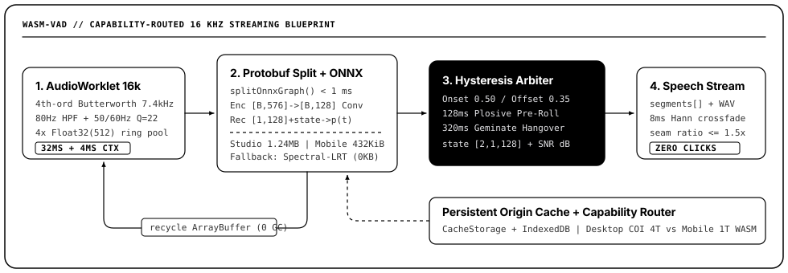

Streaming 16 kHz Voice Activity Detection with Zero Boundary Clicks.
Distilled branch-free ONNX specialists (432 KiB mobile hybrid W8A32+FP16 &
1.24 MB studio FP32), sub-millisecond binary protobuf graph splitting,
AudioWorklet anti-aliased capture, and a 0 KB spectral-LRT fallback.
Why Branch-Free ONNX + Client-Side Protobuf Graph Splitting?
Official silero_vad.onnx (2.33 MB) embeds both 8 kHz and 16 kHz networks inside 7 nested
If control-flow subgraphs, forcing WebGPU fallback to CPU and serializing batch inference.
wasm-vad distills a branch-free 16 kHz graph and splits it in browser RAM in <1 ms
at acoustic_features so batch detection vectorizes the entire Conv encoder in one pass.

Head-to-Head Accuracy, Noise Rejection & Throughput
Evaluated across 24,265 frames (776.5 s @ 16 kHz) spanning clean multi-turn speech across 12 languages, +12 dB & +5 dB broadband pink noise, +5 dB 50/60 Hz mains hum, and 24 pure adversarial non-speech streams (hum, pink/white noise, keyboard click bursts, desk thumps, and pure sine tones).
| Engine | Weights | Frame F1 [95% CI] | ROC-AUC | Non-Speech FPR | RTF | Frame p95 |
|---|---|---|---|---|---|---|
| Naive RMS Energy Gate | 0 KB | 79.05% [76.65..81.26] | 0.6735 | 77.08% | 0.000019 | 1.0 µs |
wasm-vad Zero-Dep Spectral-LRT (dsp) |
0 KB | 82.84% [79.52..86.14] | 0.9053 | 8.07% | 0.000369 | 14.5 µs |
wasm-vad Mobile Hybrid W8A32+FP16 (mobile) |
432 KiB | 95.01% [94.35..95.67] | 0.9822 | 0.00% | 0.002683 | 115.5 µs |
wasm-vad Studio FP32 Graph-Split (studio) |
1.24 MB | 95.08% [94.41..95.78] | 0.9828 | 0.00% | 0.002158 | 99.2 µs |
Three Lines to Start, Full Streaming Control When Needed
1. One-Shot Detection & Silence Trimming
import vad from 'wasm-vad';
const segments = await vad('./meeting.wav');
// [{ startMs: 480, endMs: 2912, confidence: 0.94, pcm, wav }]
const detector = await vad(); // auto capability-routed
const clean = await detector.trim('./podcast.wav');
// clean.wav -> click-free Hann-crossfaded 16 kHz WAV2. Live Browser Microphone (AudioWorklet)
import vad from 'wasm-vad';
const detector = await vad();
const mic = await detector.listen({
onSpeechStart: ({ startMs, snrDb }) =>
console.log('Turn started @', startMs, snrDb),
onSpeechEnd: (utterance) =>
sendToWhisperOrAsr(utterance.wav),
});